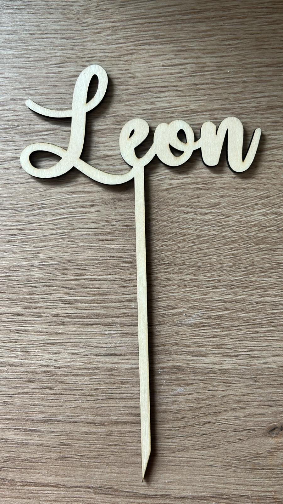

Caketopper Leon
Sein Name auf der Torte — ein Moment, der in Erinnerung bleibt.

Das Projekt
Für Leons Geburtstag wurde dieser Caketopper aus Holz gefertigt — mit seinem Namen in einer verspielten, klaren Schrift, die zu einem Kindergeburtstag passt.
Ein Caketopper ist klein, aber er macht die Torte zum Mittelpunkt des Festes. Diesen kann man jedes Jahr wiederverwenden und so immer wieder Freude bereiten.
Was ich gemacht habe
Der Name „Leon" wurde aus Lindenholz ausgeschnitten und mit einer kleinen Stütze versehen, die ihn sicher in der Torte hält. Die Schrift ist luftig und freundlich — perfekt für ein Kinderfest.
Auf Wunsch kann der Caketopper mit einem Alter ergänzt werden: „Leon · 5" oder „Happy Birthday Leon".
Details
Material: Lindenholz · Technik: Laserschnitt & Gravur · Anlass: Geburtstag
Du möchtest einen personalisierten Caketopper für eine Torte gestalten?
Ähnliches Projekt anfragen →